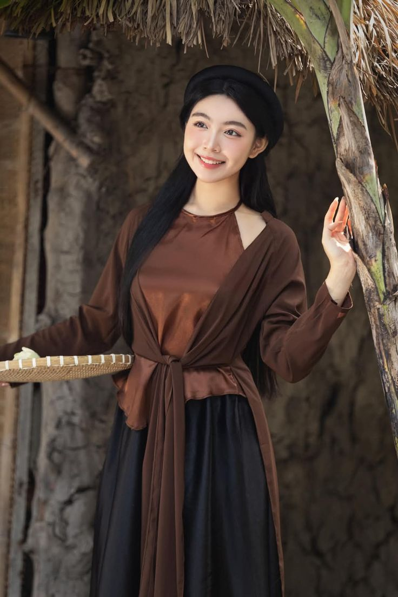

Áo Tứ Thân
Áo tứ thân là một loại trang phục truyền thống Việt Nam tôn vinh vẻ đẹp mộc mạc, giản dị nhưng lại rất duyên dáng đồng thời ca ngợi đức tính cần cù, chăm chỉ của phụ nữ thời xưa.
Áo tứ thân là một loại trang phục truyền thống Việt Nam tôn vinh vẻ đẹp mộc mạc, giản dị nhưng lại rất duyên dáng đồng thời ca ngợi đức tính cần cù, chăm chỉ của phụ nữ thời xưa.